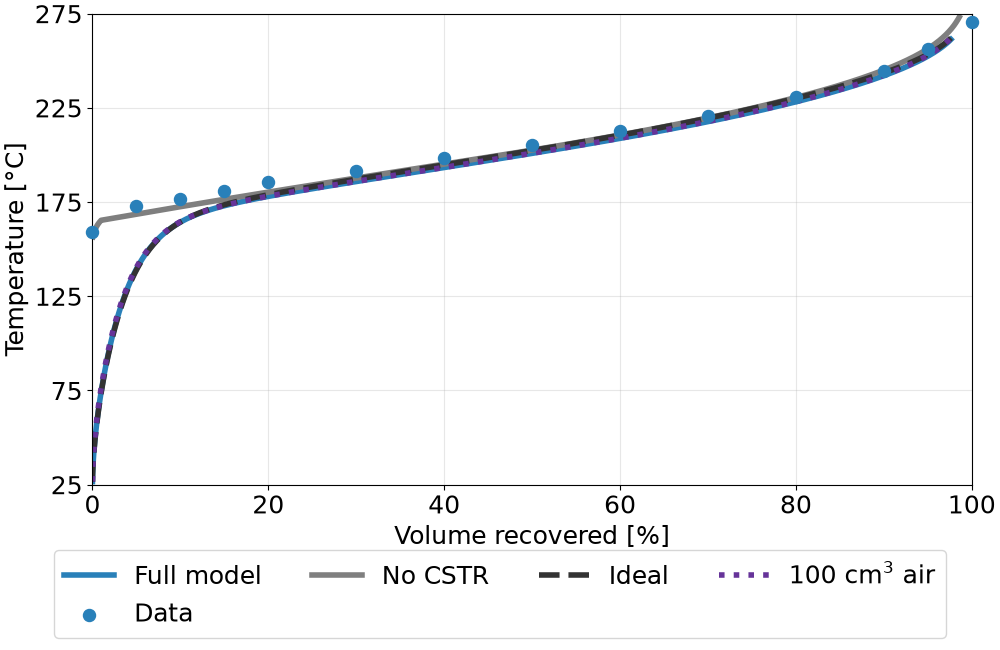

Simulating Distillation
This tutorial shows how to simulate the ASTM D86 distillation test with the model of
Greenfield et al.[1] (see Simulated Distillation
for the model). The complete script is
distillation.py
in the tutorials directory.
Simulating a D86 curve
distill() takes a
Fuel and returns a
D86Result. Its method
temperature_at interpolates the D86 temperature at given volume fractions
recovered.
import numpy as np
import fuellib as fl
from fuellib.simulate.distillation.greenfield import D86Apparatus, distill
fuel = fl.Fuel("posf10325") # Jet A-3
result = distill(fuel)
# D86 temperature (C) at 10%, 50%, and 90% recovered
T10, T50, T90 = result.temperature_at(np.array([0.1, 0.5, 0.9])).to("degC")
print(f"T10: {T10:~P.1f}, T50: {T50:~P.1f}, T90: {T90:~P.1f}")
>> T10: 164.4 °C, T50: 200.8 °C, T90: 242.1 °C
Model variants and apparatus parameters
The keyword arguments of distill switch off parts of the model, and
D86Apparatus changes the apparatus
and procedure parameters (see the default values in Simulated Distillation).
# Variants of the model
partial = distill(fuel, air_cstr=False) # no air-filled CSTR
ideal = distill(fuel, ideal_solution=True, ideal_vapor=True)
# Different apparatus parameters
result = distill(fuel, apparatus=D86Apparatus(air_volume=fl.Units.Quantity(100.0, "cm^3")))
Plotting and comparing curves
D86Result.plot plots the D86 temperature against the volume percent recovered.
Passing the returned axes to the next call overlays the curves, each in the next color
of the fl_blue_4 colormap (see fuellib.utils.color_maps). The measured D86
data of a fuel, if available, is returned by fuellib.utils.plotting.d86_data()
and plotted as symbols in the color of the curve.
ax = result.plot(
label="Full model",
temperature_units="degC",
data=fl.plotting.d86_data(fuel),
data_label="Data",
)
partial.plot(ax=ax, label="No CSTR", temperature_units="degC")
ideal.plot(ax=ax, label="Ideal", temperature_units="degC", linestyle="--")
large_air_volume.plot(
ax=ax, label="100 cm$^3$ air", temperature_units="degC", linestyle=":"
)
The simulated curves of several fuels can also be plotted together with their measured
data using fuellib.utils.plotting.plot_distillation() or the fl-simulate
command (see Command-Line Interface (CLI) Tools).


Fig. 4 Simulated distillation using Greenfield et al. [1] of conventional jet fuel POSF10325 (A-3) against data from the Air Force Research Laboratory[2]. Note that the variant that omits the air-filled CSTR (air_cstr=False) does a better job of capturing the initial temperatures of the distillation curve. This is not always the case, and the full model is generally more accurate for other fuels.